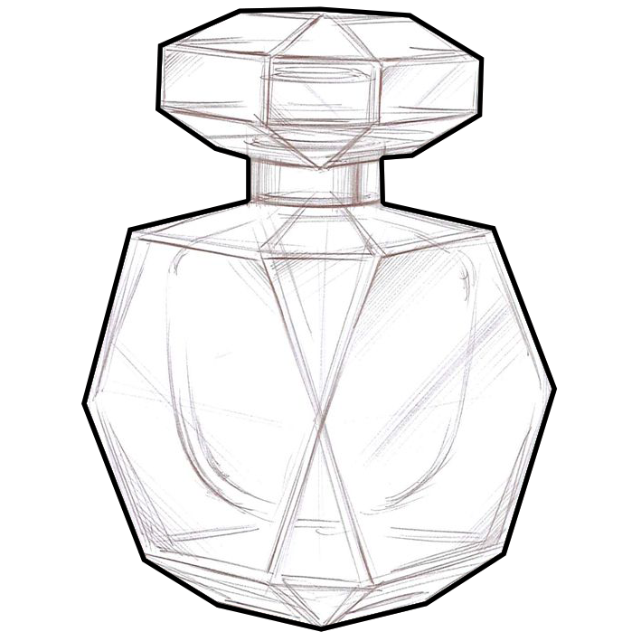
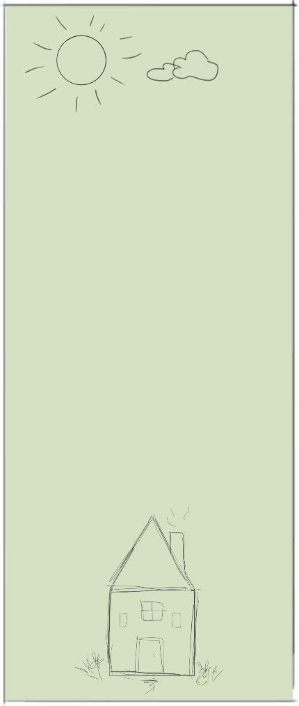
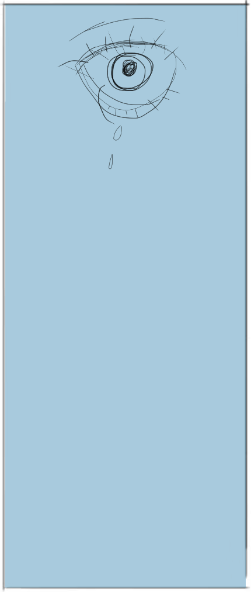
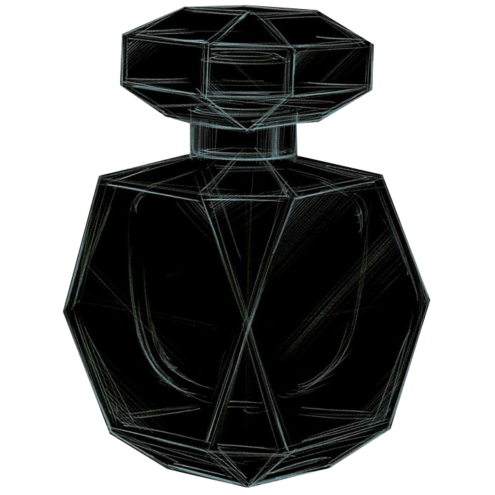

Digitizing the physical
“The Fragrance of Memories” is an experimental installation where my partner and I aimed to convey feelings online that cannot be transmitted by a computer. We decided to focus on conveying the idea of scent—just like how a scent can trigger a memory, we collected a palette of memories to pair with a scent.
At a glance
Front-end Web Dev
Tools
HTML, CSS, JavaScript, Photoshop, Illustrator
Methods
Interviews
Imagining fragrance
We knew that in order to achieve this impossible goal of conveying a scent, we had to do everything we could that a scent does. That is, we displayed distinct memories and used a personal (hand-written) design ideology to imitate these aspects of scent.



Stacking notes
Interviewing all of the participants gave us a certain number of “notes,” or memories, for each “scent,” or person. We also had a chance to see how each person believed they best conveyed the same things that scent does. Building the scene in HTML gave us an interactive digital canvas to tell these stories.
Team members
Evan Bird, Ashley Zhu